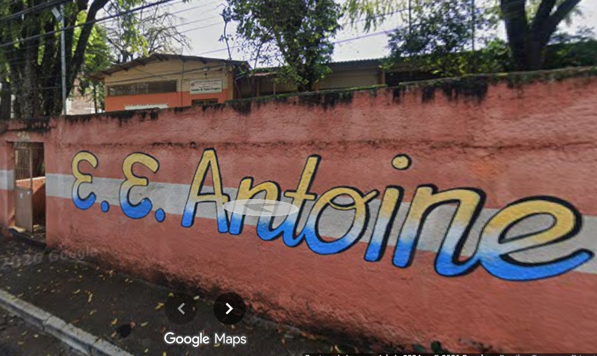
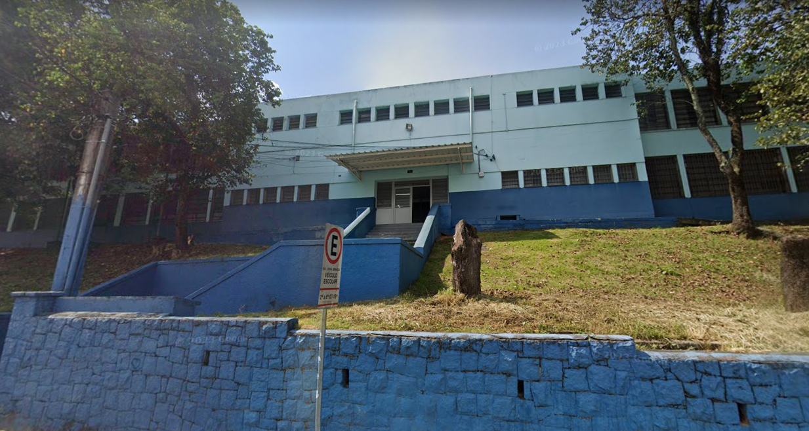

E. E. Antoine de Saint Exupery
Fundação
A Escola Estadual Antoine de Saint-Exupéry foi criada oficialmente pelo Decreto nº 48.847,
de 24 de novembro de 1967.
A instituição começou a ganhar vida durante a grande expansão da rede pública de ensino de São Paulo na década de 1960.
O objetivo era atender à crescente população de bairros da Zona Norte,
como a Vila Carbone e o Limão.
O Patrono
A escola foi batizada em homenagem a Antoine de Saint-Exupéry,
famoso escritor e piloto francês que conquistou
o mundo com o livro O Pequeno Príncipe.
A escolha do nome reflete uma tradição da época de homenagear grandes
personal idades da literatura e da história nas novas escolas estaduais paulistas.
Evolução da Estrutura
• Quadra esportiva coberta e descoberta
• Laboratório de ciências e de informática
• Sala de leitura
• Pátio coberto
• Refeitório com alimentação escolar

E. E. Professor Plínio Damasco Penna
Sobre
A Escola Estadual Professor Plínio Damasco Penna é uma tradicional instituição de ensino pública localizada
na região da Freguesia do Ó (especificamente na Vila Bancária Munhoz),
na Zona Norte de São Paulo.
A escola destaca-se principalmente por sua transição para o modelo de tempo integral.
História e Evolução
• Modelo Integral: Desde 2015, a unidade integra o [Programa de Ensino Integral (PEI)](1.1.4, 1.2.11) do Estado de São Paulo.
• Foco Pedagógico: Sua diretriz principal foca na formação de estudantes autônomos, solidários e competentes.
• Patrono: Leva o nome do Professor Plínio Damasco Penna, uma homenagem a uma figura de relevância para a educação paulista.
Estrutura e Recursos Educacionais
De acordo com os dados públicos do Censo Escolar cadastrados no QEdu e
Melhor Escola,
a instituição oferece uma infraestrutura de suporte
pedagógico completo:
•Espaços Esportivos: Quadra esportiva coberta e pátio
descoberto para recreação.
•Laboratórios: Salas dedicadas para experimentos
de ciências e laboratório de informática equipado.

•Apoio à Leitura: Sala de leitura/biblioteca ativa com acervo para pesquisa.•Conectividade: Rede de internet banda larga disponível para apoio tecnológico.